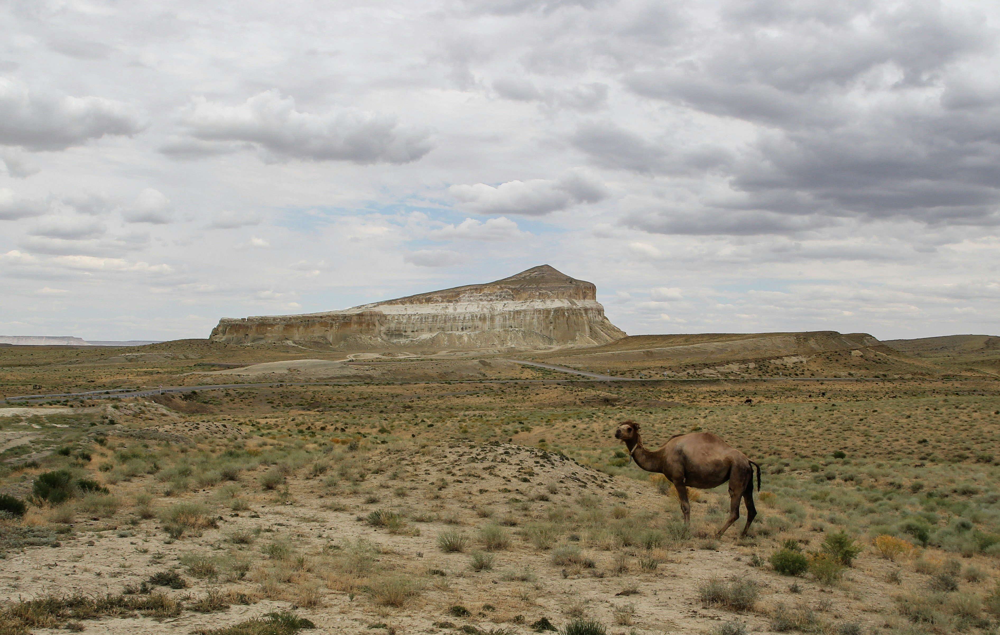
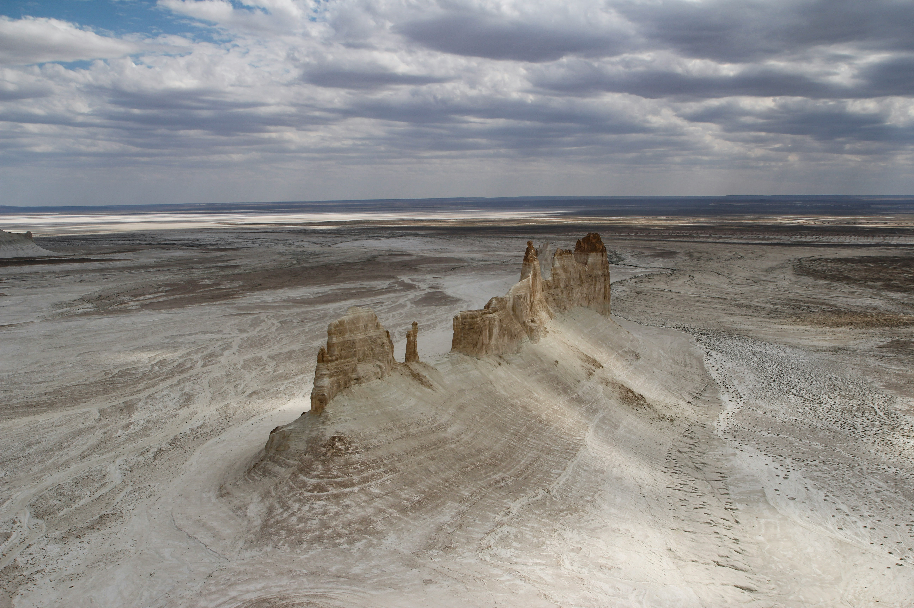
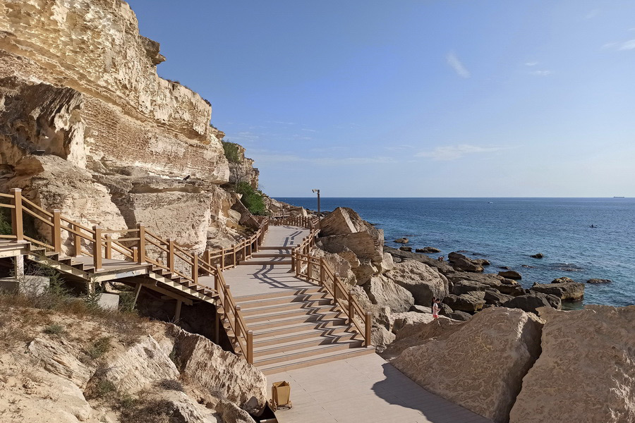

Aktau: Pearl of the Caspian
Discover ancient underground mosques, dramatic canyons, and breathtaking seaside views.
About Mangystau Region
Aktau is your gateway to the unique landscapes of western Kazakhstan. Here are the top locations you must visit:
Must-See Natural Spots
- Bozjyra Valley: Stunning chalk spires and desert canyons.
- Torysh (Valley of Balls): Mysterious spherical stone concretions.
- Karagiye Depression: One of the deepest dry depressions on Earth.
Cultural & Historical Sites
- Beket-Ata Underground Mosque: A sacred 18th-century pilgrimage site.
- Shakpak-Ata: Ancient rock-cut mosque with ancient petroglyphs.
- Aktau Rock Trail: Scenic pedestrian walkway along the Caspian cliffs.
Top Highlights in Detail
Breathtaking locations you can explore during your trip.

Bozjyra Canyon
A majestic architectural creation of nature located in the Ustyurt Plateau. Famous for its white clay mountains.

Aktau Rock Trail
A modern walking path along the Caspian Sea cliffs equipped with lighting, observation decks, and historical monuments.
Recommended 3-Day Excursion Schedule
| Day | Destination / Route | Activity Highlights |
|---|---|---|
| Day 1 | Aktau City & Rock Trail | Seaside walk, local museum, sunset view at Caspian shore |
| Day 2 | Bozjyra & Ustyurt Plateau | Off-road jeep tour, canyon viewpoints, photography |
| Day 3 | Underground Mosques (Beket-Ata) | Spiritual heritage tour, visiting Torysh Valley of Balls |